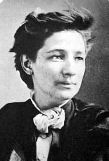
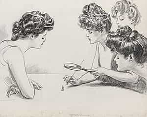

This is the second installment of a multi-part series about the evolution, or devolution, of the American woman throughout the arc of American history. Click here for the first installment here.
The Gilded Age in America followed directly on the heels of the Civil War that lasted up until the assassination of President William McKinley. It is a widely misunderstood era, as serious rumblings began with regards to the changes in society – many of it dominated by female voices. It was referred to as the Gilded Age because a thin veneer of gold lined the serious, festering problems of wider society. The 1950’s wasn’t the height of patriarchal approaches to family, leadership and society in general – it was the last gasp. The Gilded Age was the zenith of patriarchal society in America, with storm clouds slowly but surely gathering of the horizons of North America.
First off, the 1850’s were a tumultuous period in American history as the country teetered on the verge of civil war. A handful of ineffective American Presidents were elected who did little to stave off what would eventually erupt in a bloody and costly civil war. When Lincoln was elected in 1860 it all but assured Southern secession. The war ended four years later, with North winning a decisive victory; Lincoln himself was assassinated the next year. This setup of events leads to the Gilded Age – an age of unprecedented American economic growth and social transformation.
Consider the massive influx of European immigrants into the country. Irish, Italians, Brits, Germans and all manner of Scandinavian flooded the country. They did for many different reasons – mostly related to chasing wealth in the US. This was a time of rapid urbanization and immigrants flocked to the cities, looking to work for factories. Urban centers became hotbeds of disorganization, crime and poverty. Modern approaches to urban planning and policing came out of this era. Many moved West and formed communities all over the country, often taking to farming as indigenous Americans were more keen to move to urban areas. This created much racial and cultural strife, most especially for the Irish and Italians. Times were tense and two marked depressions struck the country – in 1873 and 1893. As such, issues like monetary policy and tariffs were huge political issues.
What was going on with sex relations is more fascinating than the rapid urbanization. There are two categories of female that competed against one another in this age: the “New Woman” and the Gibson girl. The “New Woman” was the literal embodiment of the primitive feminist. White, middle class and upper class and college educated, they were the founders of modern feminism. Many of them never married and never had kids. They flocked to urban areas, as there can be no feminism on a farm. They enjoyed increased employment opportunities during this era, contrary to mainstream feminist thought.
Women regularly were typists, telephone dispatchers, worked as secretaries and, in some states, worked in the civil service. They championed looser sexual mores, but were far more discreet about it than later generations. Also, understand the legal concept of coveture – whereby a woman gives up her legal rights to her husband upon marriage. If a woman remained unmarried, her right to own property and contract were maintained. Not marrying was a way of retaining legal rights that might otherwise get extinguished.

The champion of this sort of woman was Victoria Woodhull. Born into poverty, she worked her way up the ladder and became rich and engaged in a variety of activities. She married at 14 to a 28 year-old who was by all accounts a very charming doctor, but he turned out to be a raging alcoholic and a serial womanizer. As usual, a woman with serious psychological issues becomes a feminist pioneer.
She founded the first female-run Wall Street brokerage firm with her sister and they were financially successful. She was the first female candidate for the Presidency, running under the Equal Rights party. She also was the first woman to advocate for “free love” for women. Based on her experiences in her first (of three) marriages, she concluded people (women) should have the universal ability to marry, divorce and get custody of the children – with maintenance (alimony), of course. Despite her professed love for monogamy, she said people personally reserved the right to “love others exclusively” outside the marriage.
In contrast to “New Women” were Gibson girls. The term Gibson girl was coined in 1892 (towards the end of the era) by Charles Dana Gibson, as he saw the Gibson girl as emblematic of the beauty reflected in the era. She was tall, skinny with “ample bosom and buttocks.” This woman did incorporate some of the “New Woman’s” ways while trying to maintain some sense of tradition. She was considered to be upper-class, refined, educated and sensitive. However, she broke traditional convention, as she could be seen working out in public, like biking. She typically eschewed campaigning for women’s suffrage or any political movements. She would most likely be whispering in husband’s ear about the changes she wants to see in society or starting or helping in charities, the church or just general social betterment.
She was seen as not usurping masculinity nor male roles, but carefully sought out to expand her world. She sought to be more worldly, intelligent and to help her community in roles outside her home. Part of this impetus was urbanization and the strict gender role divide that emerged. Note that in rural farming communities, a level of equality exists as there is too much work for a woman to just sit around and dust the house – she has to feed livestock, tend to the yard and all manner of other stuff. The wage earning male that leaves a woman behind to tend to the home makes her restless. Plus, considering these women had excess income to hire nannies, tutors and maids, it makes sense they could get bored. As usual, these women assumed their grievances were universal to all women.
The final important point was the development of the concept of the “domestic goddess.” These women helped play up these roles, as they wanted more and more accolades for their domestic endeavors. Further, the men (betas) of the era sought to edify these women. Common complaints about the era involved men fawning over the beauty of women, as such fawning treated women as objects. Further, there were complaints of sexism about “domestic goddess” concept. The important takeaway is that the home was seen the under the control of a “domestic goddess,” while work outside the home was seen as best under the control of a male. Pure gender role division.

However, Gibson girls emphasized propriety, marriage and refinement in women. She helped popularize the corset and started and aided in many important charities in cities across the nation. Like the above picture, they began to belittle men. They would run cartoons like this one, showing men to be weak, ineffective and impotent. They referred to themselves as equals to men and sometimes considered themselves to be the snarky sidekick to their husband. They liked to portray men as impotent fools. Their growing distaste for American men is palpable. It’s almost as if when men give women what they claim to want they immediately begin to resent the men who give into their demands.
Once again, this sort of social setup reeks of privilege. These women were fairly close to or at the apex of society. Of course, they could afford to be single and not reproduce. For the “New Women,” they depended on poor women and Gibson girls to keep up fertility rates so they didn’t have too. As for Gibson girls, they didn’t step outside the box, but backed up right against it. They flirted with stepping across the line, but ultimately did not. However, they helped pave the way for feminism to penetrate into society.
Women will always—once a degree of comfort and wealth is accumulated as a society—demand “free love” and be allowed to indulge their hypergamic impulses. It will start at the top of society and trickle down the poorest, once welfare programs are established that allow for a woman to have a husband’s income with no husband. Women will call it “helping the poor” but I think part of the impulse is helping other women achieve hamster transcendence and allow her to have two distinct men in her life – providers and alphas. Of course, she may know the provider as a husband or not, as he is just a taxpayer. In this era, there were not many federal or state programs to help women, but part of this is that women who decided to go without marriage went without children. Per usual, poor women who worked still had many children.
Notice how generous women are with men’s money. In the Gilded Era, men made the money that went to taxes. There was no federal income tax and the jobs women did often did not produce much tax revenue. Women shamelessly spent men’s money on all sorts of pet projects that allowed them to self-aggrandize. Most resources I read about these women seemed to be reverential of generosity women displayed.
A rich guy in the era founds a university? Greedy 1%er better cough up the damn money.
A rich guy’s wife founds a soup kitchen? Women really are the morally superior sex.
In sum, privileged women began to haltingly assemble the machinery of feminism. They helped alter fashion and social standards. Most importantly, they helped establish the idea of the domestic goddess and a woman’s moral superiority. This idea is very relevant to today, as this idea has seeped into any institution in which women have sought access. American women, of all ideological stripes, consider themselves morally superior to men and this era was an important step towards cementing that mindset.
Read More: The Roots Of Feminism In America